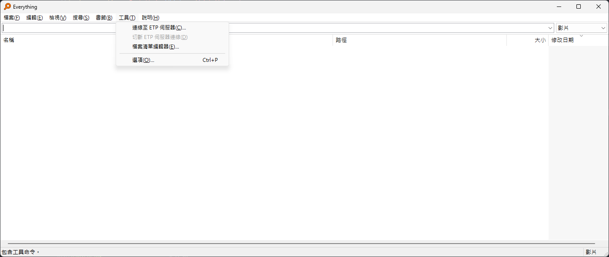
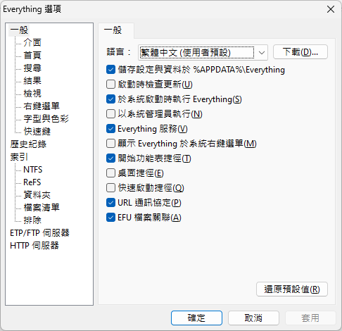

安裝 Everything
訪問 Everything 官方網站 下載最新版的 Everything 並按照指示完成安裝。
配置 Everything
啟動 Everything 應用程序。
在應用程式的主視窗，點擊工作列上的「工具」=>「選項」。
在「一般」分頁中，尋找「URL 通訊協定」選項並勾選。
點擊「確定」以保存設定。
 安裝並使用擴充功能
根據你的瀏覽器，從相應的網路擴充功能商店下載並安裝本擴充功能。
在任何網頁或應用程式中，選擇你想要搜尋的文字。
選擇文字後，會出現一個查詢圖示。
點擊此圖示，將會啟動 Everything 搜尋程序，並自動填入你所選的文字，進行搜尋。
使用提示
確保在使用擴充功能前，Everything 已經被正確配置並運行在背景中。
通過擴充功能啟動的搜尋將直接使用 Everything 的高速檔案索引，獲得快速精確的搜尋結果。